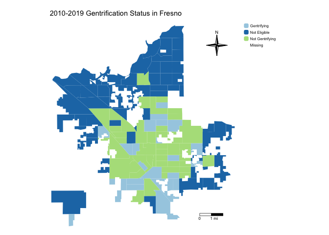

Lab 8b: Gentrification
CRD 150 - Quantitative Methods in Community Research
Professor Noli Brazil
May 21, 2025
We go from one form of place-based inequality in the last lab (segregation) to another form in this lab (gentrification). How do we determine whether a neighborhood is undergoing gentrification? Let’s find out using a quantitative approach. We’ll determine which neighborhoods are experiencing gentrification in the City of Fresno, an issue that has gotten a lot of local attention.
In this guide you will learn how to calculate the measure of gentrification used by Ding et al., (2016). This lab guide follows closely and supplements the material presented in class Handout 9.
Assignment 8 is due by 12:00 pm, May 28th on Canvas.
See here for
assignment guidelines. You must submit an .Rmd file and its
associated .html file. Name the files:
yourLastName_firstInitial_asgn08. For example: brazil_n_asgn08.
Open up a R Markdown file
Download the Lab
template into an appropriate folder on your hard drive (preferably,
a folder named ‘Lab 8’), open it in R Studio, and type and run your code
there. The template is also located on Canvas under Files. The template
is also located on Canvas under Files. Change the title (“Lab 8b”) and
insert your name and date. Don’t change anything else inside the YAML
(the stuff at the top in between the ---). Also keep the
grey chunk after the YAML. For a rundown on the use of R Markdown, see
the assignment
guidelines.
Installing and loading packages
We will not be using any new packages in this lab. You’ll need to
load the following packages. Unlike installing, you will always need to
load packages whenever you start a new R session. As such, you’ll always
need to use library() in your R Markdown file.
library(sf)
library(tidyverse)
library(tidycensus)
library(tigris)
library(tmap)
library(rmapshaper)
library(flextable)Bringing in the data
We will use the Ding et al. (2016) method outlined in Handout 9 for measuring gentrification. The measure defines gentrification as follows
- A neighborhood is eligible for gentrification if its median household income is less than the city’s median household income at the beginning of the observation period.
- An eligible neighborhood gentrifies if its change from the beginning to the end of the observation period in median gross rent or median housing value is greater than the change in the city and the change in its percent of residents that have a college degree is more than the change in the city.
We will define the beginning of the period using 2006-2010 ACS data (this is the first ACS period using 2010 tract boundaries) and the end of the period using 2015-2019 ACS data. We need to bring in the appropriate variables from each of these years into R.
To demonstrate this measure, we will examine gentrification in the City of Fresno in California. We need to collect data at the tract and city levels.
Tract level data
Gentrification is a neighborhood socioeconomic change process. So we need to grab socioeconomic data from the beginning and end of the period for census tracts (the most common measure of neighborhood in the social sciences).
First, we will need to read in tract-level median gross rent, median
housing value and percent with a college degree for Fresno city census
tracts in the beginning of the period (2006-2010). We will use the
get_acs() command to get these data. We won’t go through
each line of code in detail because we’ve covered most of these
operations and functions in prior labs. We’ve embedded comments within
the code that briefly explains what each chunk is doing. Go back to
prior guides (or RDS/GWR) if you need further help.
The one new function we use below is rename_with() which
allows you to rename all the variables with names of a certain pattern.
In this case, we rename variables with an “E” at the end, replacing “E”
with nothing ““. Notice that I attached a 10 to the end of each
variable that I will use in the gentrification measure to signify that
it is for 2006-2010.
# Bring in 2006-2010 census tract data using the Census API
ca.tracts10 <- get_acs(geography = "tract",
year = 2010,
variables = c(medinc10 = "B19013_001", rent10 = "B25064_001",
houseval10 = "B25077_001", bachm = "B15002_015",
mastersm = "B15002_016", profm = "B15002_017",
phdm = "B15002_018", bachf = "B15002_032",
mastersf = "B15002_033", proff = "B15002_034",
phdf = "B15002_035", totcol = "B15002_001"),
state = "CA",
survey = "acs5",
output = "wide",
geometry = TRUE)
# Rename, calculate and keep essential vars.
ca.tracts10 <- ca.tracts10 %>%
rename_with(~ sub("E$", "", .x), everything()) %>%
mutate(pcol10 = 100*(bachm+mastersm+profm+phdm+bachf+mastersf+proff+phdf)/totcol) %>%
select(c(GEOID,medinc10, rent10, houseval10, pcol10)) We then need to keep just the City of Fresno tracts. Here we use familiar friends that were introduced in Lab 6.
# Bring in city boundaries. We'll use the boundaries for the final year, 2019
pl <- places(state = "CA", year = 2019, cb = TRUE)
# Keep Fresno city
fresno <- pl %>%
filter(NAME == "Fresno")
#Keep tracts in Fresno
fresno.tracts <- ms_clip(target = ca.tracts10, clip = fresno, remove_slivers = TRUE)Second, we need to get the same variables but for the end of the
period, which we define as 2015-2019. I’ve appended 19 to the
end of each variable name to signify these are 2019 data. This is done
to distinguish these variables from the 2010 ACS data, which we’ll be
downloading later when we measure gentrification. Also note that we
don’t need any spatial data since ca.tracts10 is already an
sf object, so we don’t include the argument
geometry = TRUE.
# Bring in 2015-2019 census tract data using the Census API
ca.tracts19 <- get_acs(geography = "tract",
year = 2019,
variables = c(tpop = "B03002_001",
white = "B03002_003", black = "B03002_004",
asian = "B03002_006", hisp = "B03002_012",
medinc19 = "B19013_001", rent19 = "B25064_001",
houseval19 = "B25077_001", bach = "B15003_022",
masters = "B15003_023", prof = "B15003_024",
phd = "B15003_025", totcol = "B15003_001"),
state = "CA",
survey = "acs5",
output = "wide")
# Rename, calculate and keep essential vars.
ca.tracts19 <- ca.tracts19 %>%
rename_with(~ sub("E$", "", .x), everything()) %>%
mutate(pwhite19 = 100*(white/tpop), pasian19 = 100*(asian/tpop),
pblack19 = 100*(black/tpop), phisp19 = 100*(hisp/tpop),
pcol19 = 100*(bach+masters+prof+phd)/totcol) %>%
select(c(GEOID,pwhite19, pasian19, pblack19, phisp19,
medinc19, rent19, houseval19, pcol19)) Finally, let’s join the two tract level data objects. The
sf object fresno.tracts contains 2006-2010 ACS
tract-level data. We join the regular tibble ca.tracts19, which
contains 2015-2019 ACS tract-level data, using left_join().
The GEOID is GEOID in both fresno.tracts and
ca.tracts19
fresno.tracts <- fresno.tracts %>%
left_join(ca.tracts19, by = "GEOID")Make sure we’ve successfully merged all the variables we need by viewing the object fresno.tracts.
glimpse(fresno.tracts)## Rows: 127
## Columns: 14
## $ GEOID <chr> "06019000501", "06019000800", "06019001202", "06019001407",…
## $ houseval10 <dbl> 89100, 276900, 131500, 161400, 237100, 32700, 124000, 11930…
## $ medinc10 <dbl> 18154, 25658, 33649, 20425, 76429, 26436, 22675, 26316, 361…
## $ rent10 <dbl> 673, 806, 819, 721, 1393, 761, 790, 734, 961, 791, 774, 856…
## $ pcol10 <dbl> 3.483769, 1.055409, 3.276284, 8.578856, 17.285531, 8.157895…
## $ pwhite19 <dbl> 8.175355, 15.866873, 1.447051, 9.691538, 24.370594, 13.6855…
## $ pasian19 <dbl> 2.527646, 4.798762, 12.869985, 17.507295, 30.278617, 7.4952…
## $ pblack19 <dbl> 6.990521, 8.668731, 5.108529, 11.588162, 1.074186, 10.28007…
## $ phisp19 <dbl> 80.92417, 69.89164, 79.91668, 59.14965, 41.62471, 66.48631,…
## $ medinc19 <dbl> 23717, 25083, 39223, 27258, 79750, 27031, 32295, 24322, 368…
## $ rent19 <dbl> 798, 686, 1060, 834, 1605, 888, 940, 766, 1203, 973, 868, 9…
## $ houseval19 <dbl> 179000, 358800, 149700, 68400, 255000, 80500, 93500, 115000…
## $ pcol19 <dbl> 1.870504, 11.528822, 6.269592, 6.982068, 20.195972, 3.94554…
## $ geometry <GEOMETRY [°]> POLYGON ((-119.7763 36.7503..., MULTIPOLYGON (((-1…City level data
As described in Handout 9, we need to compare neighborhoods to the
entire City of Fresno to determine if a neighborhood is (1) eligible to
gentrify and (2) if they are, whether they gentrified. This means we
need to bring in city data for the beginning (2006-10) and end (2015-19)
periods. First, let’s bring in 2006-2010 ACS data for all places in
California using get_acs(). We use the argument
geography = "place". We specify these data as place level
2006-2010 by attaching a c10 to the end of each variable. We
can’t usegeometry = TRUE to bring in spatial data for
2006-2010 city data because tidycensus does not provide
spatial data for years before 2011.
# Bring in census tract data using the Census API
ca.places10 <- get_acs(geography = "place",
year = 2010,
variables = c(medincc10 = "B19013_001", rentc10 = "B25064_001",
housevalc10 = "B25077_001", bachm = "B15002_015",
mastersm = "B15002_016", profm = "B15002_017",
phdm = "B15002_018", bachf = "B15002_032",
mastersf = "B15002_033", proff = "B15002_034",
phdf = "B15002_035", totcol = "B15002_001"),
state = "CA",
survey = "acs5",
output = "wide")
# Keep Fresno. Calculate and keep essential vars. Also take out zero population tracts
ca.places10 <- ca.places10 %>%
filter(NAME == "Fresno city, California") %>%
rename_with(~ sub("E$", "", .x), everything()) %>%
mutate(pcolc10 = 100*(bachm+mastersm+profm+phdm+bachf+mastersf+proff+phdf)/totcol) %>%
select(c(GEOID,medincc10, rentc10, housevalc10, pcolc10)) We next need to bring in the last year (2015-2019) of city level
data. We specify the data as place level 2015-2019 by attaching a
c19 to the end of each variable. Here, we specify
geometry = TRUE to get city spatial boundaries, and then
filter to get just Fresno city.
# Bring in census tract data using the Census API
ca.places19 <- get_acs(geography = "place",
year = 2019,
variables = c(medincc19 = "B19013_001", rentc19 = "B25064_001",
housevalc19 = "B25077_001", bachc = "B15003_022",
mastersc = "B15003_023", profc = "B15003_024",
phdc = "B15003_025", totcolc = "B15003_001"),
state = "CA",
survey = "acs5",
output = "wide",
geometry = TRUE)
# Keep Fresno. Calculate and keep essential vars. Also keep just Fresno
fresno.city <- ca.places19 %>%
filter(NAME == "Fresno city, California") %>%
rename_with(~ sub("E$", "", .x), everything()) %>%
mutate(pcolc19 = 100*(bachc+mastersc+profc+phdc)/totcolc) %>%
select(c(GEOID,medincc19, rentc19, housevalc19, pcolc19)) Finally, let’s join the two city level data objects. The
sf object fresno.city contains 2015-2019 ACS
data just for Fresno city. We join the regular tibble
ca.places10, which contains 2006-2010 ACS city-level data, to
fresno.city using left_join(). The GEOID is
GEOID in both files.
fresno.city <- fresno.city %>%
left_join(ca.places10, by = "GEOID")Make sure to look at the data.
glimpse(fresno.city)## Rows: 1
## Columns: 10
## $ GEOID <chr> "0627000"
## $ medincc19 <dbl> 50432
## $ rentc19 <dbl> 1005
## $ housevalc19 <dbl> 242000
## $ pcolc19 <dbl> 21.93261
## $ medincc10 <dbl> 43124
## $ rentc10 <dbl> 832
## $ housevalc10 <dbl> 244200
## $ pcolc10 <dbl> 20.51262
## $ geometry <MULTIPOLYGON [°]> MULTIPOLYGON (((-119.6798 3...Joining the tract and city data
We have tract and city level data at the beginning and end of the period in separate data objects (fresno.tracts and fresno.city). We now need to join all of them together into a single file.
When you view fresno.tracts, you’ll notice that we don’t
have any variable indicating the city identifier to merge in city-level
data. Instead of left_join(), we instead use the
st_join() function to join the city data to the tract data,
which is a part of the sf package. Here, rather than
using an ID like GEOID, the joining is based on geographic location. We
already used st_join() to join two spatial data object in
Lab
8a. Let’s use it again.
fresno.tracts <- fresno.tracts %>%
st_join(fresno.city, left=FALSE)This function joins the variables from fresno.city to the data frame fresno.tracts.
Look at the variable names to see if the join was successful.
names(fresno.tracts)## [1] "GEOID.x" "houseval10" "medinc10" "rent10" "pcol10"
## [6] "pwhite19" "pasian19" "pblack19" "phisp19" "medinc19"
## [11] "rent19" "houseval19" "pcol19" "GEOID.y" "medincc19"
## [16] "rentc19" "housevalc19" "pcolc19" "medincc10" "rentc10"
## [21] "housevalc10" "pcolc10" "geometry"We can also look at the data.
glimpse(fresno.tracts)## Rows: 127
## Columns: 23
## $ GEOID.x <chr> "06019000501", "06019000800", "06019001202", "06019001407"…
## $ houseval10 <dbl> 89100, 276900, 131500, 161400, 237100, 32700, 124000, 1193…
## $ medinc10 <dbl> 18154, 25658, 33649, 20425, 76429, 26436, 22675, 26316, 36…
## $ rent10 <dbl> 673, 806, 819, 721, 1393, 761, 790, 734, 961, 791, 774, 85…
## $ pcol10 <dbl> 3.483769, 1.055409, 3.276284, 8.578856, 17.285531, 8.15789…
## $ pwhite19 <dbl> 8.175355, 15.866873, 1.447051, 9.691538, 24.370594, 13.685…
## $ pasian19 <dbl> 2.527646, 4.798762, 12.869985, 17.507295, 30.278617, 7.495…
## $ pblack19 <dbl> 6.990521, 8.668731, 5.108529, 11.588162, 1.074186, 10.2800…
## $ phisp19 <dbl> 80.92417, 69.89164, 79.91668, 59.14965, 41.62471, 66.48631…
## $ medinc19 <dbl> 23717, 25083, 39223, 27258, 79750, 27031, 32295, 24322, 36…
## $ rent19 <dbl> 798, 686, 1060, 834, 1605, 888, 940, 766, 1203, 973, 868, …
## $ houseval19 <dbl> 179000, 358800, 149700, 68400, 255000, 80500, 93500, 11500…
## $ pcol19 <dbl> 1.870504, 11.528822, 6.269592, 6.982068, 20.195972, 3.9455…
## $ GEOID.y <chr> "0627000", "0627000", "0627000", "0627000", "0627000", "06…
## $ medincc19 <dbl> 50432, 50432, 50432, 50432, 50432, 50432, 50432, 50432, 50…
## $ rentc19 <dbl> 1005, 1005, 1005, 1005, 1005, 1005, 1005, 1005, 1005, 1005…
## $ housevalc19 <dbl> 242000, 242000, 242000, 242000, 242000, 242000, 242000, 24…
## $ pcolc19 <dbl> 21.93261, 21.93261, 21.93261, 21.93261, 21.93261, 21.93261…
## $ medincc10 <dbl> 43124, 43124, 43124, 43124, 43124, 43124, 43124, 43124, 43…
## $ rentc10 <dbl> 832, 832, 832, 832, 832, 832, 832, 832, 832, 832, 832, 832…
## $ housevalc10 <dbl> 244200, 244200, 244200, 244200, 244200, 244200, 244200, 24…
## $ pcolc10 <dbl> 20.51262, 20.51262, 20.51262, 20.51262, 20.51262, 20.51262…
## $ geometry <GEOMETRY [°]> POLYGON ((-119.7763 36.7503..., MULTIPOLYGON (((-…We’re done!
Measuring Gentrification
We’ve got all the data we need in one data object (fresno.tracts). Now we can start constructing our gentrification measure.
Gentrification eligible tracts
First, let’s determine whether a tract is eligible to gentrify in the
first place. A neighborhood is eligible for gentrification if its median
household income is less than the city’s median household income in
2006-2010. We create a variable named eligible that specifies
whether a neighborhood is eligible or not using the
ifelse() function within mutate().
fresno.tracts <- fresno.tracts %>%
mutate(eligible = ifelse(medinc10 < medincc10,
"Eligible",
"Not Eligible"))Here, the ifelse() function tells R that if a tract’s
median household income medinc10 is less than the city level
median household income medincc10, label that neighborhood
“Eligible”. Otherwise, label the neighborhood as “Not Eligible”.
What is the percentage of neighborhoods that are eligible to
gentrify? Here, we are summarizing a categorical variable, which we
covered in Lab
4. Let’s put the results in a nice looking table by dropping the
geometry using the function st_drop_geometry() and creating
a nicely formatted table using the function
flextable().
fresno.tracts %>%
group_by(eligible) %>%
summarize(n = n()) %>%
mutate(Percent = 100*(n / sum(n))) %>%
ungroup() %>%
st_drop_geometry() %>%
flextable() %>%
colformat_double(digits = 2) eligible | n | Percent |
|---|---|---|
Eligible | 71 | 55.91 |
Not Eligible | 55 | 43.31 |
1 | 0.79 |
There is one tract missing a designation because it is missing values
on median household income and median housing value (use
summary(fresno.tracts) to detect missingness).
Gentrifying tracts
Next, we identify the eligible tracts that are gentrifying and the ones that are not gentrifying. An eligible neighborhood gentrifies if its change between 2006-2010 and 2015-2019 in median gross rent or median housing value is greater than the change in the city and the change in its percent of residents that have a college degree is more than the change in the city.
Let’s first calculate the tract-level 2010 to 2019 differences in rent rentch, housing values housech, and percent with a college degree pcolch.
fresno.tracts <- fresno.tracts %>%
mutate(rentch = rent19-rent10,
housech = houseval19-houseval10,
pcolch = pcol19-pcol10)Next, we calculate the city-level differences in rent rentchc, housing values housechc, and percent with a college degree pcolchc.
fresno.tracts <- fresno.tracts %>%
mutate(rentchc = rentc19-rentc10,
housechc = housevalc19-housevalc10,
pcolchc = pcolc19-pcolc10)We now have all the pieces to construct a variable gent that
labels tracts as “Not eligible”, “Gentrifying”, and “Not Gentrifying”.
We do this using a set of ifelse() statements within
mutate().
fresno.tracts <- fresno.tracts %>%
mutate(gent = ifelse(eligible == "Not Eligible", "Not Eligible",
ifelse(eligible == "Eligible" & pcolch > pcolchc &
(rentch > rentchc | housech > housechc), "Gentrifying",
"Not Gentrifying")))Examining Gentrification
What is the percent of neighborhoods in Fresno that experienced
gentrification? Let’s put it in a nice looking table by dropping the
geometry using the function st_drop_geometry() and using
the function flextable().
fresno.tracts %>%
group_by(gent) %>%
summarize(n = n()) %>%
mutate(Percent = 100*(n / sum(n))) %>%
ungroup() %>%
st_drop_geometry() %>%
flextable() %>%
colformat_double(digits = 2) gent | n | Percent |
|---|---|---|
Gentrifying | 22 | 17.32 |
Not Eligible | 55 | 43.31 |
Not Gentrifying | 49 | 38.58 |
1 | 0.79 |
Approximately 17 percent of neighborhoods in Fresno experienced
gentrification between 2010 and 2019. Where are these neighborhoods
located? Let’s make a nice color patch map using our best buddy
tm_shape().
tm_shape(fresno.tracts, unit = "mi") +
tm_polygons(fill = "gent",
fill.scale = tm_scale(style = "cat",
values = "paired"),
fill.legend = tm_legend(title = "", frame = FALSE),
col_alpha = 0) +
tm_scalebar(breaks = c(0, 1, 2), text.size = 0.75,
position = tm_pos_in("right", "bottom")) +
tm_compass(type = "4star", position = tm_pos_in("right", "top")) +
tm_title("2010-2019 Gentrification Status in Fresno") +
tm_layout(frame = FALSE, scale = 0.7)
What are the mean percentages of residents that are Hispanic and non-Hispanic white, Black, and Asian in 2010 in each of the gentrification categories?
fresno.tracts %>%
st_drop_geometry() %>%
filter(is.na(gent) == FALSE) %>%
group_by(gent) %>%
summarize("% White" = mean(pwhite19),
"% Black" = mean(pblack19),
"% Hispanic" = mean(phisp19),
"% Asian" = mean(pasian19)) %>%
flextable() %>%
colformat_double(digits = 2) gent | % White | % Black | % Hispanic | % Asian |
|---|---|---|---|---|
Gentrifying | 15.86 | 7.26 | 63.41 | 11.45 |
Not Eligible | 42.92 | 4.56 | 36.21 | 12.98 |
Not Gentrifying | 17.33 | 8.19 | 60.81 | 10.81 |
Exploring the association between gentrification and racial/ethnic composition, demographic and socioeconomic characteristics, and other conditions is a great idea for your final project.
Assignment 8
Download and open the Assignment 8 R Markdown Script. The script can also be found on Canvas (Files - Week 8 - Assignment). Any response requiring a data analysis task must be supported by code you generate to produce your result. (Just examining your various objects in the “Environment” section of R Studio is insufficient—you must use scripted commands.).
- In Assignment 6, we descriptively examined the claim that Houston is the most racially integrated city in the United States. Let’s employ the segregation tools we learned this week to explore this claim even further. Let’s also compare Houston to Sacramento, a city that has also been proclaimed as among most racially diverse in the nation. Read in the Houston and Sacramento shapefiles houstondems.shp and sacdems.shp, which can be found on Canvas in the zipped folder assignment8q1.zip (Files - Week 8 - Assignment). These files contain data for census tract in the Houston and Sacramento metropolitan areas. Consider the datasets to be cleaned and ready for analysis. A record layout of the data can be found here.
- Calculate the Black/White, Hispanic/White and Asian/White Dissimilarity Indices for Houston and Sacramento. Present these values in a presentation-ready table(s). (3 points)
- Calculate the Black/White, Hispanic/White and Asian/White Interaction Indices for Houston and Sacramento. Present these values in a presentation-ready table(s). (3 points)
- Based on your answers to questions (a) and (b), which city is most segregated? Why? (2 points)
- Instead of examining segregation at the city level, let’s find where it exists at the neighborhood level. Calculate the Location Quotient for Racial Residential Segregation (LQRSS) for the Asian population for each city. (1 point)
- Show presentation-ready maps of the Asian LQRSS for each city. (2 points)
- Let’s examine the socioeconomic variables that may be correlated with neighborhood Asian concentration in each city. Calculate the correlation between the Asian LQRSS and percent of residents under 18 years old, percent of residents between 22 and 34, and percent foreign born in Houston. Do the same for Sacramento. Summarize the results in your own words, noting differences and similarities between the two cities. (2 points)
- We created a gentrification measure for the City of Fresno in Lab 8b. This question asks you to use the same method from Lab (Ding et al., 2016) to create a gentrification measure for the City of Sacramento, which has received a lot of local media attention for the rising presence of gentrification in certain neighborhoods. Download the file assignment8q2.zip from Canvas (Files - Week 8 - Assignment) into the appropriate folder on your hard drive. Unzip the file and read in the file saccitygent.shp, which is a shapefile of Sacramento census tract boundaries and demographic and socioeconomic variables. Consider the dataset to be cleaned and ready for analysis. A record layout of the data can be found here.
Create a variable that determines whether a neighborhood is not eligible for gentrification, is eligible and is not gentrifying, and is eligible and is gentrifying using the Ding et al., measure. (3 points)
Show a presentation-ready table of the percentages of tracts in Sacramento that were not eligible to gentrify, experienced gentrification and did not experience gentrification between 2010 and 2019. (2 points)
Produce a presentation-ready map of the gentrification variable you created in (a). From the map, summarize the spatial patterns of gentrification in the city. (2 points)

This
work is licensed under a
Creative
Commons Attribution-NonCommercial 4.0 International License.
Website created and maintained by Noli Brazil